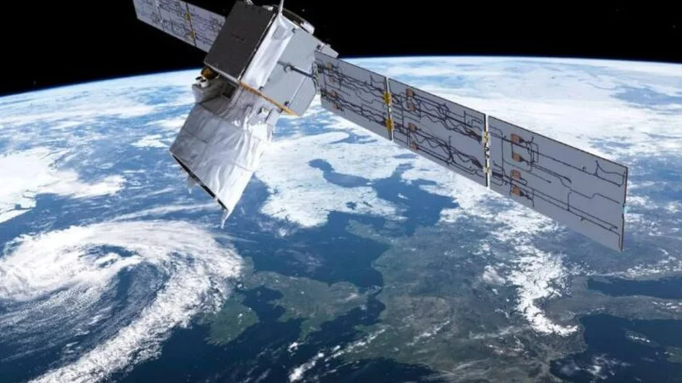
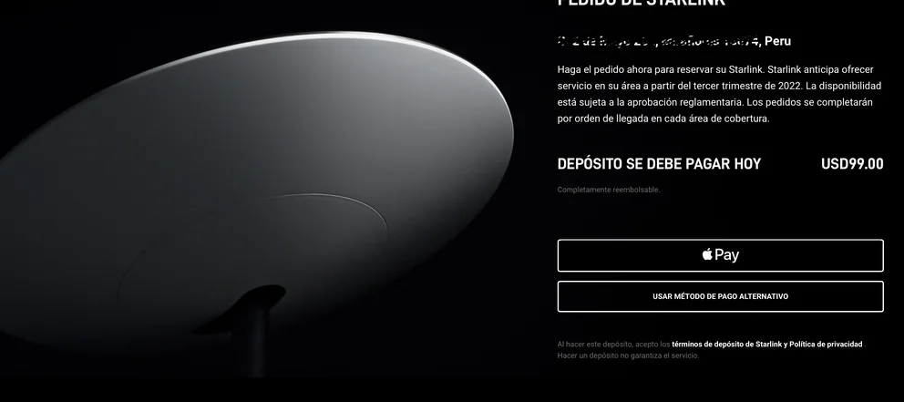
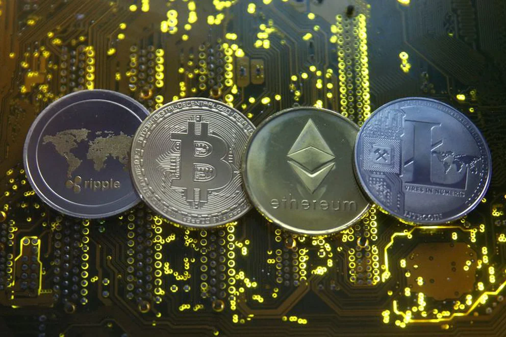

Starlink está empezando a dar sus pasos en diferentes compañías, por lo que a partir de ahora es posible que muchas personas comiencen a escuchar hablar que diferentes negocios ya utilizan este servicio.
Asimismo, el pago con criptomonedas también está siendo tendencia en diferentes sectores, como por ejemplo en hoteles.
Por eso, en Infobae primero se explicará todo lo que se tiene que saber sobre Starlink, el proyecto de internet por satélite de Elon Musk, el creador de las empresas Tesla y SpaceX, así como los beneficios del pago con criptomonedas en las compañías y finalmente, algunos ejemplos de negocios que ya están empleando estas tecnologías.
Qué es Starlink
Starlink es el servicio de Internet satelital que es desarrollado por SpaceX de Elon Musk. La idea de este proyecto es poner miles de satélites en órbita para llevar Internet a cada rincón del planeta, incluyendo las zonas rurales con menos cobertura.
La idea de la empresa Starlink es tener alrededor de 12.000 satélites en órbita, y que luego una persona o una compañía pueda pagar una mensualidad para conectarse desde cualquier lado con el dispositivo que se tenga. La idea tampoco es la de competir con la fibra o las conexiones 5G, sino la de complementar ambas ofertas con la suya.
Se marca que las conexiones por Starlink consiguen velocidades entre 50 Mbps y 150 Mbps, con una latencia de entre 20 y 40 milisegundos.
Por lo tanto, es más una red pensada para aquellas zonas de la geografía donde no llega la fibra, y las conexiones 4G o 5G se quedan cortas. En estos casos entonces tendrás la alternativa de optar por esta otra alternativa.
Cómo funciona Starlink en un hogar o negocio
En un negocio u hogar, la persona que contrata el servicio recibirá un kit para montar la antena en el lugar. Este está configurado para una zona geográfica determinada, o sea que no se puede prestar.
La antena se tiene que enchufar y apuntar al cielo, y esta trabajará con el router que viene incluido en el kit, y con él se tendrá la conexión en la ubicación exacta.
Tal y como indica la web de Starlink, la antena del kit debe colocarse en una zona elevada y/o libre de obstáculos, como pueden ser un árbol, una chimenea o un poste de la luz. Cualquiera de estos obstáculos puede interferir en la conexión y dejar sin internet.
Asimismo, Starlink tiene un precio bastante elevado. A continuación, se puede ver un ejemplo de un pedido que se realiza desde Lima, Perú, teniendo en cuenta que la mensualidad de este servicio es de USD$ 99:
En qué beneficia la incorporación del pago con criptomonedas en negocios
Si muchas compañías ya aceptan tarjetas de crédito, débito y efectivo como medio de pago, ¿por qué no aceptar bitcoins y otros métodos de pago con criptomonedas?
Las criptomonedas son monedas virtuales que se crean y se almacenan de manera electrónica. Nunca se va a poder tener en la mano un Bitcoin o un Litecoin porque solo existen en el mundo virtual y surgió con el objetivo de convertirse en un medio que permitiera el intercambio de bienes y servicios sin la necesidad de un intermediario.
Según George Levy, instructor de Udemy, fundador de Blockchain Institute of Technology y director de Blockchain y Economía Digital en blocksEDU explica 2 beneficios de contar con este método de pago en los negocios:
1.Es muy sencillo de hacer
Solo se necesita una billetera electrónica (o wallet) para hacer las transacciones y acercarse a un Exchange, es decir, a un intermediario, si es que se desea que en cuanto se efectúe el pago, se haga la conversión de bitcoin a dólares sin preocuparse por nada en cada transacción.
2. Mejores comisiones y más seguridad
El intermediario que se elija típicamente cobrará alrededor de 1% de comisión por transacción, mientras que aceptar tarjeta de crédito puede costarte hasta de 3% o 4%.
Además de que una transacción en criptomoneda definitiva, se realiza prácticamente al momento y como es segura, se estaría protegiendo de fraudes y de clientes abusivos que quieran hacer devoluciones indebidas.
Ejemplos de negocios que tienen el servicio de Starlink y pagos con criptomonedas
Recientemente, se ha dado a conocer que el Hotel Tabachín, ubicado en Puerto Escondido, Oaxaca, México, se está innovando al convertirse en una de las primeras propiedades en utilizar Starlink en México, así como sumarse a la economía digital aceptando pago con criptomonedas.
Este nuevo método de pago sumará a Tabachín a la lista de destinos que aceptan pagos digitales, atrayendo a un mercado mundial.
Por otro lado, son más los comercios que aceptan el pago con criptomonedas. Tesla, que permite comprar ya coches con Bitcoin, Norwegian Airlines o Just Eat France son algunos ejemplos.
Fondos de inversión como Blackrock o Fidelity han incluido el Bitcoin como opción para sus portfolios e incluso administraciones públicas como el Ayuntamiento de Miami los aceptan como forma de pago.